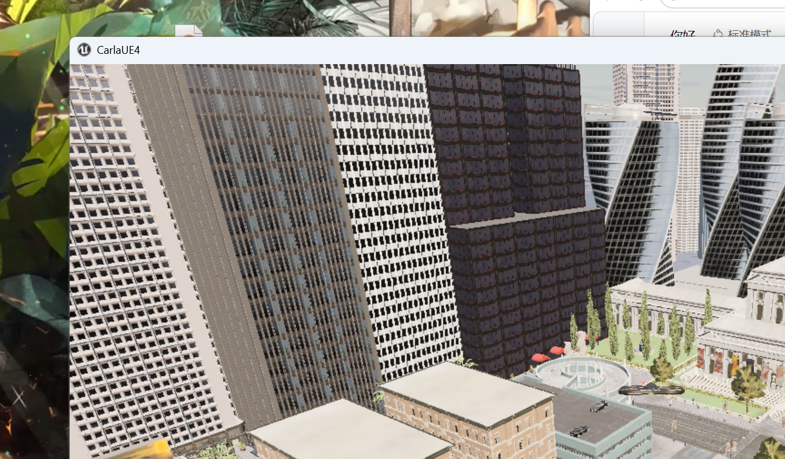
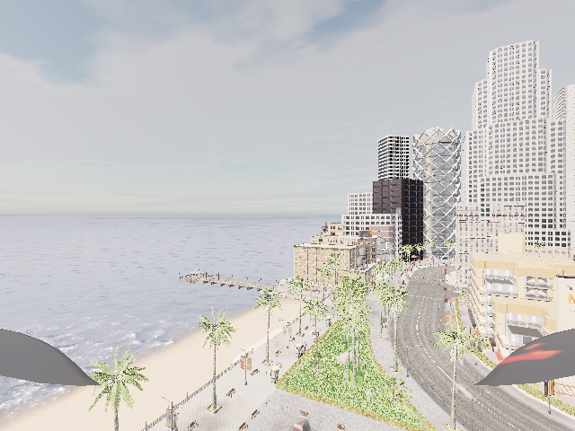
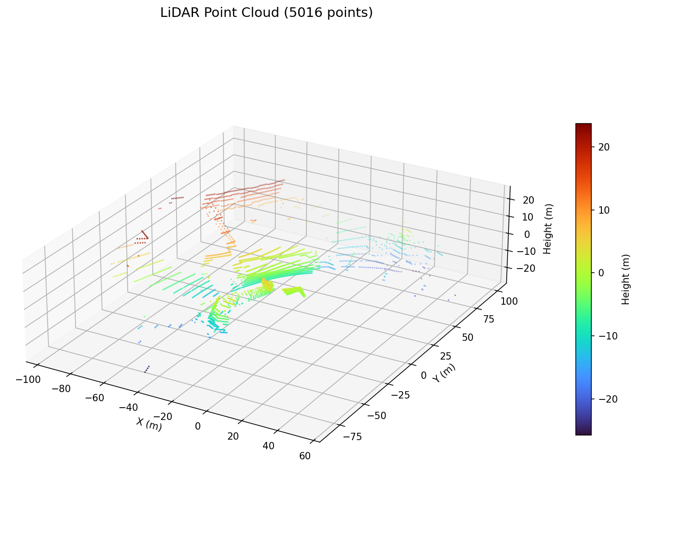
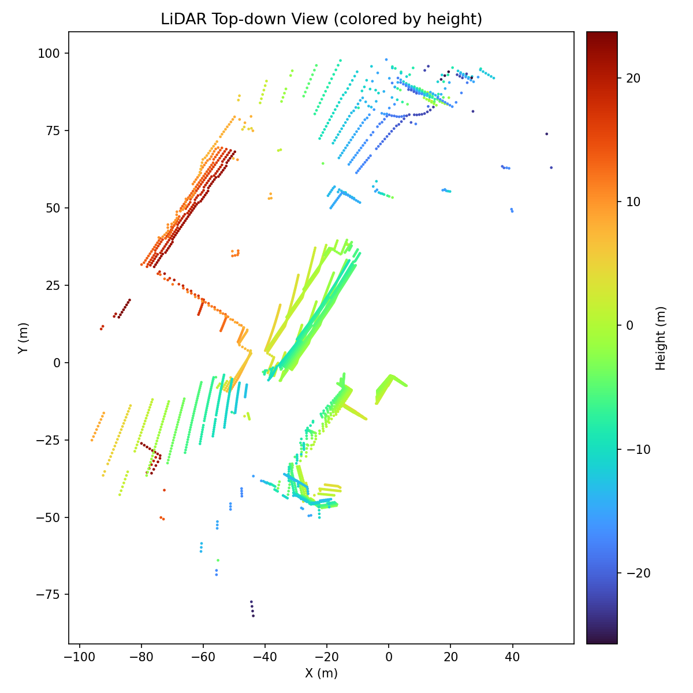
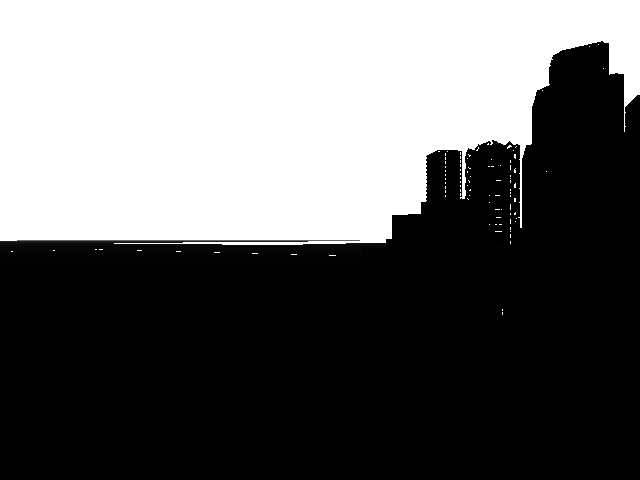

无人机与 ROS 的桥接模块（carlair_ros_bridge）
本模块在 CarlaAir（OpenHUTB 空地一体仿真） 与 ROS Noetic 之间提供统一桥接： 把 AirSim 的 NED 坐标统一换算为 ROS 的 ENU 坐标，向上暴露标准的位姿、图像、点云话题， 并接收速度与目标点指令，使感知、规划、控制、端到端各模块无需关心仿真器内部细节。
1. 运行架构
- Windows 侧：运行 CarlaAir 仿真器，同时提供两套 API
- CARLA：
localhost:2000（车辆、行人、天气、CARLA 原生传感器） - AirSim：
localhost:41451（无人机飞行、相机、激光雷达） - 虚拟机侧：ROS Noetic 运行本桥接模块，通过 TCP 连接宿主机的
41451端口
2. 环境准备
2.1 Windows 侧启动仿真器
cd CarlaAir-v0.1.7-Windows11-x86_64
SetupEnv.bat
TestEnv.bat
StartCarlaAir.bat Town01 --no-traffic --quality Low
等待终端输出 CarlaAir is ready.，此时 2000 与 41451 两个端口就绪。
显存较小的机器建议使用 Town01/Town02 小地图并配合 --quality Low。
2.2 配置 AirSim 传感器
将工程根目录下的 AirSimConfig/settings.json 换成本模块提供的配置（包含 RGB、深度、
语义分割相机与 16 线激光雷达），启动器每次启动会自动把它复制到
%USERPROFILE%\Documents\AirSim\settings.json。
需要注意其中雷达的 DataFrame 字段必须与 ROS 侧 sensor/lidar_frame 参数一致，
本模块统一使用 VehicleInertialFrame（点云落在 world 世界系，可与 /uav/odom 直接叠加）；
若改成 SensorLocalFrame，则需把 sensor/lidar_frame 同步改为 sensor_local，
桥接层会用雷达位姿把点云变换到惯性系后再转 ENU。
2.3 虚拟机侧安装客户端
pip3 install airsim
3. 编译与运行
# 为避免与教材章节中的同名包冲突，单独建立一个小工作空间
mkdir -p ~/bridge_ws/src
ln -s ~/path/to/ros2/src/air/carlair_ros_bridge ~/bridge_ws/src/
cd ~/bridge_ws
catkin_make
source devel/setup.bash
# 启动（含环境自检节点）
roslaunch carlair_ros_bridge main.launch
宿主机地址可通过参数覆盖：
roslaunch carlair_ros_bridge main.launch host:=192.168.94.1
sim/vehicle_name 默认为空，表示使用 settings.json 中的默认载具；
只有在多机仿真时才需要显式指定（如 vehicle_name:=Drone1）。
4. 话题接口
| 方向 | 话题 | 类型 | 说明 |
|---|---|---|---|
| 发布 | /uav/odom |
nav_msgs/Odometry |
ENU 位姿与速度，默认 20 Hz |
| 发布 | /tf |
tf2_msgs/TFMessage |
world → base_link |
| 发布 | /camera/image_raw |
sensor_msgs/Image |
前视彩色图（bgr8，640×480），默认 20 Hz |
| 发布 | /camera/depth |
sensor_msgs/Image |
平面深度图（32FC1，单位米），默认 20 Hz |
| 发布 | /camera/seg |
sensor_msgs/Image |
语义分割伪彩色图（bgr8），默认关闭 |
| 发布 | /lidar/points |
sensor_msgs/PointCloud2 |
XYZ float32 世界系（ENU）点云，默认 10 Hz |
| 发布 | /uav/status |
std_msgs/String |
READY / HOVER / VELOCITY / GOAL / GOAL_DONE |
| 订阅 | /uav/cmd_vel |
geometry_msgs/Twist |
速度指令（默认机体系：前 / 左 / 上） |
| 订阅 | /uav/goal |
geometry_msgs/Point |
目标点（ENU），飞抵后自动悬停 |
安全设计：速度指令自动限幅；超过 cmd_timeout（默认 0.5 s）没有新指令即自动悬停；
目标点任务在独立线程执行，期间速度通道让位。
5. 坐标系换算
AirSim 使用 NED（北-东-地），ROS 使用 ENU（东-北-天），换算矩阵为
ENU = C · NED, C = [[0, 1, 0],
[1, 0, 0],
[0, 0, -1]]
即 x_enu = y_ned, y_enu = x_ned, z_enu = -z_ned
姿态：R_enu = C · R_ned
恒等姿态（机头朝北）在 ENU 下的偏航角为 +90°，已在 tests/test_frames.py 中用单元测试锁定。
6. 传感器桥接（图像 / 深度 / 激光雷达）
6.1 图像：一次 RPC 取三路
image_pub.py 把彩色、深度、分割三路图像合并成一次 simGetImages 调用：
resp = client.simGetImages([
airsim.ImageRequest("front_rgb", 0, False, False), # Scene，BGRA
airsim.ImageRequest("front_depth", 1, True, False), # DepthPlanar，float32
airsim.ImageRequest("front_seg", 5, False, False), # Segmentation
], vehicle_name=vehicle)
AirSim 的 RPC 是同步的，若三路各发一次调用，单帧耗时按往返次数线性增长； 合并成一次往返可拿到全部数据，把网络往返开销压到最低。实测在 640×480、RGB+深度 两路同发（约 2.4 MB/帧）下，跨 VMware NAT 的吞吐约为 7.3 Hz（见 §7 实测）， 瓶颈在 msgpack 把深度图的 307200 个 float 解包成 Python 列表这一步，而非本模块的逻辑。
解码只用 numpy，不需要 OpenCV。AirSim 在 compress=False 时返回
width × height × 4 的 BGRA 平面数组，丢掉 alpha 后前三个通道正好是
B、G、R，与 ROS 的 bgr8 编码一一对应：
buf = np.frombuffer(bytes(resp.image_data_uint8), dtype=np.uint8)
bgr = buf.reshape(resp.height, resp.width, 4)[:, :, :3]
AirSim ImageType |
数据字段 | ROS encoding |
用途 |
|---|---|---|---|
0 Scene |
image_data_uint8（BGRA） |
bgr8 |
视觉感知、端到端网络的输入 |
1 DepthPlanar |
image_data_float（float32） |
32FC1 |
障碍距离、点云配准 |
5 Segmentation |
image_data_uint8（BGRA 伪彩色） |
bgr8 |
语义感知、标签生成 |
DepthPlanar 给出的是沿光轴的平面深度而不是透视深度，两者在针孔模型下满足
Z_planar = Z_perspective · cos θ , θ 为该像素与光轴的夹角
因此平面深度可以直接按针孔模型反投影：[X, Y, Z]ᵀ = Z_planar · K⁻¹ · [u, v, 1]ᵀ。
6.2 点云：坐标系与位姿变换
AirSim 的点云坐标系由 settings.json 中该雷达的 DataFrame 决定：
DataFrame |
含义 | 桥接处理 |
|---|---|---|
VehicleInertialFrame（默认） |
载具惯性系（NED 世界系，米），与 getMultirotorState 同源 |
只做 NED → ENU 轴变换 |
SensorLocalFrame |
雷达局部系 | 先用 LidarData.pose 变换到惯性系 |
本模块统一使用 VehicleInertialFrame，于是点云、里程计、目标点全部落在同一个
world(ENU) 坐标系内，后续 octomap 建图与路径规划不需要额外的外参标定。
当配置为 SensorLocalFrame 时，需要用雷达在惯性系中的位姿 (R, t) 做刚体变换
（LidarData.pose 即为该位姿，语义见 AirSim 官方 LIDAR 文档）：
p_world_ned = R(q_pose) · p_sensor + t_pose
p_enu = C · p_world_ned
tests/test_sensors_local.py 用「世界点 → 正向投影到雷达局部系 → 反解回世界系」的
往返一致性对此做了锁定。
6.3 PointCloud2 的二进制布局
每个点 3 个 float32（小端），依次 x、y、z：
point_step = 3 × 4 = 12 字节
row_step = point_step × width
height = 1 （无序点云）
fields = x@0(FLOAT32), y@4(FLOAT32), z@8(FLOAT32)
is_dense = 所有点均有限时为 True
该布局与 sensor_msgs.point_cloud2.create_cloud_xyz32() 完全一致，
这里手写以便在无 ROS 环境下对字节流做单元测试。
6.4 可选的点云预处理
| 参数 | 作用 | 公式 |
|---|---|---|
lidar/min_range / max_range |
环形滤波，去掉机身自反射与过远噪点 | 保留 min ≤ ‖p‖ ≤ max |
lidar/voxel_leaf |
体素栅格降采样，压缩点云 | 体素索引 k = ⌊p / leaf⌋，同格取均值 |
体素降采样用整数坐标 + np.unique 分组实现，复杂度 O(N log N)，不依赖 PCL。
4 GB 显存 / 虚拟机 CPU 的场景下，voxel_leaf:=0.2 可把 6000+ 点压到 2000 点左右，
显著降低 RViz 与后续建图节点的负担。
6.5 传感器接口验证
roslaunch carlair_ros_bridge main.launch # 默认同时开启相机与雷达
rostopic hz /camera/image_raw # 实测 ≈7.3 Hz（640×480，RGB+深度同发）
rostopic hz /camera/depth # 实测 ≈7.4 Hz
rostopic hz /lidar/points # 实测 ≈10 Hz
rostopic echo -n1 /camera/image_raw/encoding # bgr8
rostopic echo -n1 /camera/image_raw/step # 1920 (=640×3)
rostopic echo -n1 /lidar/points/width # 当前帧点数
rostopic echo -n1 /lidar/points/point_step # 12
# 只用雷达、关掉相机（省虚拟机 CPU）
roslaunch carlair_ros_bridge main.launch publish_image:=false
本地（无 ROS / 仿真器 / GPU）可先跑桩测试：
python3 tests/test_sensors_local.py # 80 项，全部通过
7. 运行验证
# 环境自检（5 项：airsim 包、连接、位姿、相机、激光雷达）
rosrun carlair_ros_bridge main.py
# 位姿频率与内容
rostopic hz /uav/odom
rostopic echo -n1 /uav/odom
# 传感器频率（相机 20 Hz / 雷达 10 Hz）
rostopic hz /camera/image_raw
rostopic hz /camera/depth
rostopic hz /lidar/points
# 下发目标点，观察状态机
rostopic pub -1 /uav/goal geometry_msgs/Point "{x: 30.0, y: 10.0, z: -8.0}"
rostopic echo /uav/status
# 键盘控制（机体系速度）
rosrun teleop_twist_keyboard teleop_twist_keyboard.py cmd_vel:=/uav/cmd_vel
实测结果（Windows 侧真实 CarlaAir v0.1.7 + airsim 1.8.1，Town01 / --quality Low / 1280×720）：
- 环境自检 5/5 通过（连接
127.0.0.1:41451成功） - RGB
front_rgb：640×480×3 uint8，BGR 通道均值 (198.1, 204.9, 209.7) - 深度
front_depth：640×480 float32，最近 0.100 m、中位数 18.109 m、有限像素 100% - 分割
front_seg：640×480×3，共 12 种颜色 - 激光雷达
lidar1：6329–6343 点，ENU 包围盒x∈[-87.0, 92.4] y∈[-23.2, 93.8] z∈[-29.45, -4.75]； 此时机体位于 ENU(0.05, -0.05, -29.25)，即贴地悬停（地面z=-29.45，建筑顶部到z=-4.75）， 到机体距离最近 1.51 m、最远 100.00 m、中位数 3.28 m - 点云预处理：6343 → 环形滤波(0.3~60 m) 5959 → 体素 0.2 m 降采样 2356 点（压缩 62.9%），
PointCloud2数据段 28272 字节 = 2356 × 12，与布局约定一致 - 无人机控制：复位 / 起飞 / 爬升到 15 m / 悬停 均通过
- 传感器桥接本地桩测试：80/80 通过（
tests/test_sensors_local.py）
ROS 侧实测（虚拟机 Ubuntu 20.04 + ROS Noetic，经 192.168.94.1 连宿主机仿真器）：
/uav/odom：20.004 Hz（min 0.040 s / max 0.059 s，与rate/odom_hz: 20一致）/lidar/points：10.000 Hz（min 0.095 s / max 0.103 s），单帧 4838–4932 点/camera/image_raw：7.285 Hz，encoding=bgr8/camera/depth：7.424 Hz
相机为什么是 ~7.3 Hz 而不是配置的 20 Hz：image_pub 的上限由 rate/image_hz: 20 决定，
但每帧要在一次 RPC 里取回 RGB（640×480×4 ≈ 1.2 MB）+ 深度（640×480 float32 ≈ 1.2 MB）
共约 2.4 MB，跨 VMware NAT 传输并由 msgpack 把 307200 个 float 解包成 Python 列表，
单帧实测约 137 ms，故吞吐被限制在 ~7.3 Hz。这是真实吞吐上限而非实现缺陷——
位姿（20 Hz）与点云（10 Hz）的数据量小，都能跑满配置频率，恰好形成一个可对比的性能结论。
需要更高帧率时，可把 settings.json 相机分辨率降到 320×240（约 4 倍数据量下降），
或 publish_depth:=false 只发彩色图。
上面这组数据由
sim_client的解码函数直接跑出来（等价于 ROS 节点内部的每一步）， 因此可以在没有 ROS 的 Windows 侧独立复现，是"换一台机器验证"的证据之一。
7.1 深度图的取值细节
DepthPlanar 的数值范围里有一个容易踩的坑：天空等没有击中任何物体的像素会返回 65504，
这是半精度浮点（float16）的最大有限值，被 AirSim 当作"无穷远"使用。因此在做深度感知或
点云融合时必须先过滤：
depth = decode_depth(resp)
valid = np.isfinite(depth) & (depth < 100.0) # 去掉 65504 的无穷远哨兵
若直接对整幅深度图求均值或反投影，天空区域会把结果整体拉偏。
7.2 msgpack 长度上限的坑（相机话题无消息）
在虚拟机（msgpack 0.6.2）上运行时，/camera/* 一度完全没有消息、节点表现为"无输出、很慢"。
日志显示：
ValueError: 307200 exceeds max_array_len(131072)
原因：msgpack 0.6.x 的解包器默认 max_array_len = 131072，而 AirSim 把深度图以 float 数组
返回（640×480 = 307200 个元素），超过上限后连接被关闭，取图请求永远等不到结果。
老版 msgpack（0.4.x，Windows 侧 conda 环境）没有这个上限，所以同样代码在两边表现不同。
修复：sim_client 在创建 AirSim 客户端之前调用 _raise_msgpack_limits()，把
max_array_len / max_bin_len / max_str_len / max_map_len 放宽到 2^31-1；
对不支持这些参数的 msgpack 老版本则探测后跳过。单元测试
tests/test_sensors_local.py 的 F 组用桩 msgpack 覆盖了"新版注入 / 老版跳过 / 幂等"三条路径。
8. 效果图
仿真器鸟瞰场景：

无人机 RGB 相机画面：

激光雷达点云（按高度着色）：

激光雷达点云俯视图（按高度着色，可见地面与建筑轮廓）：

深度相机画面：
